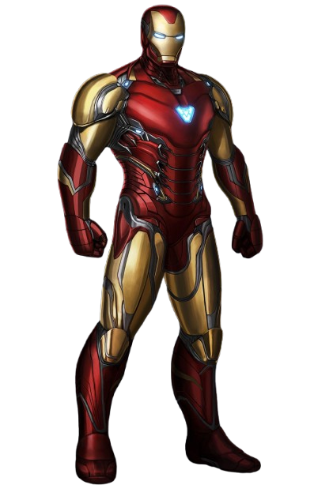
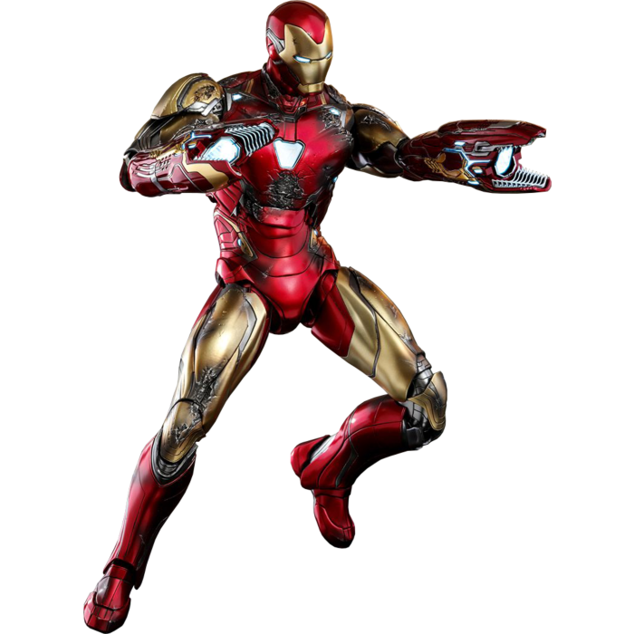
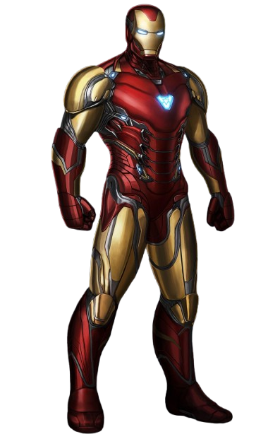
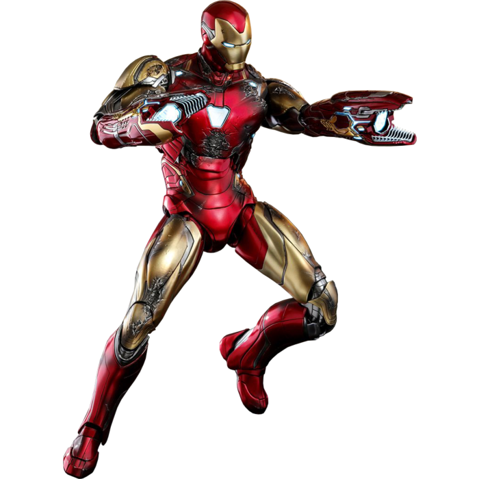

Histoire d'Iron Man
Tony Stark, un génie milliardaire, a été gravement blessé lors d'une attaque terroriste. Capturé, il a conçu une armure pour s'échapper et a ensuite perfectionné cette technologie pour devenir Iron Man. En tant que super-héros, il a joué un rôle clé dans la défense de la Terre et a cofondé les Avengers. Son sacrifice ultime a sauvé l'univers lors de la bataille contre Thanos.
Faits intéressants
- Iron Man a été créé par Stan Lee, Larry Lieber, Don Heck et Jack Kirby en 1963.
- Son intelligence artificielle, J.A.R.V.I.S., est devenue Vision dans l'univers cinématographique Marvel.
- Il a conçu plus de 50 versions différentes de son armure.
- Son réacteur ARC a été conçu pour maintenir des éclats de métal hors de son cœur.
Citations célèbres
- "Je suis Iron Man."
- "Génie, milliardaire, playboy, philanthrope."
- "Si nous ne pouvons pas protéger la Terre, soyez sûrs que nous la vengerons."
- "Part of the journey is the end."
Galerie des Tenues d'Iron Man


 


